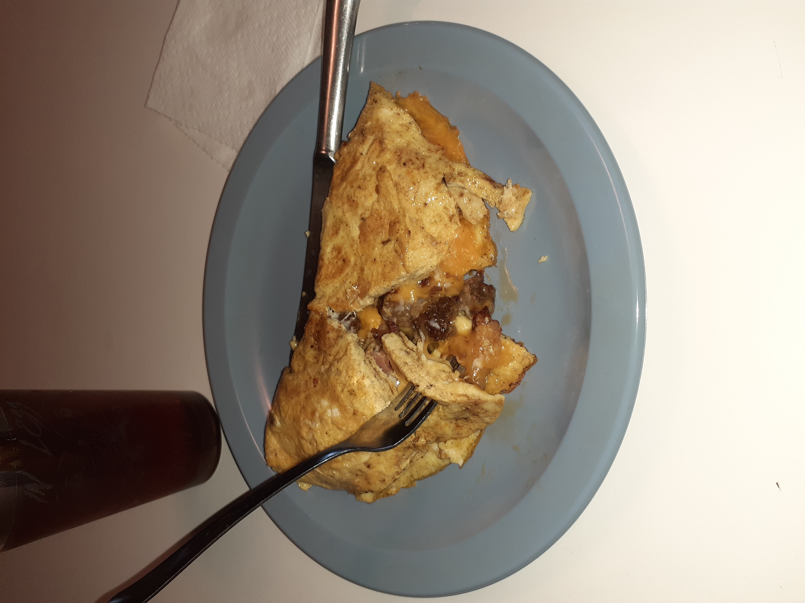

Loaded Western-style Omelette

The Breakfast of Champions.
I love omelettes! They're kind of my got-to choice whenever I have the day off or something. This breakfast really hits the spot!
Ingredients
- 4 Eggs
- 1 oz. of Shredded Cheddar Cheese
- 1/4 of an Onion Diced
- A Pinch of Smoked Paprika
- 1 Strip of Bacon cut into small pieces
- 1 oz. of Ground Sausage.
Steps
- Place a non-stick frying pan on the stove and turn burner to medium-low heat.
- Throw in the sausage, bacon, and onions. Saute then remove to a plate.
- Whisk the eggs together, adding the salt and pepper.
- Slowly pour the eggs into the frying pan.
- Be sure to tilt the frying pan a bit to get the uncooked eggs to run out over the edge of the omelette where they can get cooked faster. The goal here is to get as close as you can get to a uniformly cooked egg without flipping it, while also not burning the bottom. It takes a bit of practice to perfect but once you get this step down your omelettes will sart turning out amazing.
- Once the eggs are about 3/4 done, sprinkle the sausage, bacon, onions, and cheddar cheese over the top of the eggs.
- Now you just have to fold this monstrocity! You can fold it however it works best for you. I folded mine in half, but I find that one a bit risky so feel free to fold it into thirds if you feel like the omelette might come apart.
- Once the cheese is all melted and gooey, plate and enjoy!